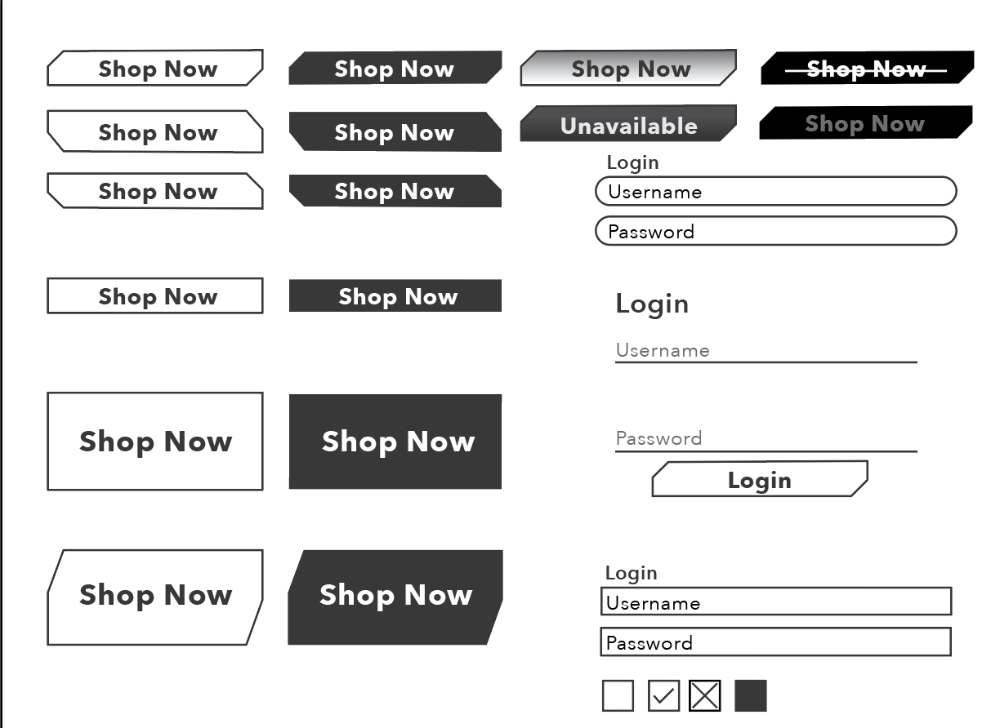

Step 3: Experimenting
The next step I tried to make as many designs for different UI elements that I could think of. In the picture above you can see the many different versions of buttons and login in screens I experimented with. I lay them out like this and make as many versions as I did so that I can be confident that the design I chose to use going forward is the absolute best design possible. This way I don't get really far along and decide that I want to change, or if I do want to change I can always come back to the different designs that I have already made. The next step for me was to chose the desings I wanted to go forward with put them all together into the document and then to create the digital branding guidelines document.